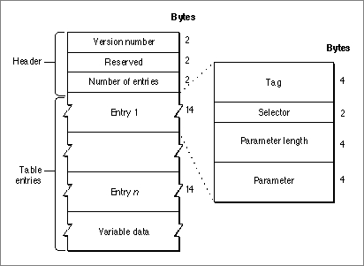
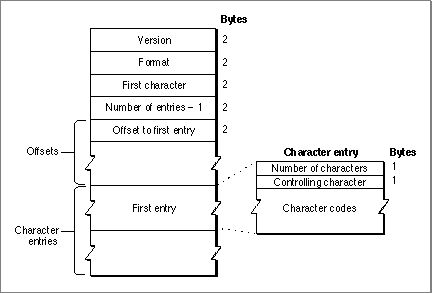
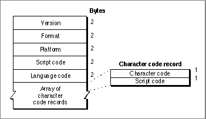
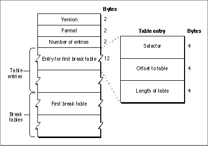

Tables for 1-Byte Script Systems
In 1-byte script systems, the encoding/rendering resource specifies character-rendering behavior. In general, only 1-byte complex script systems--those that work with the WorldScript I script extension--include an encoding/rendering resource. The defined table types at this time are
- Script configuration table
- Line-layout metamorphosis table
- Line-layout glyph-properties table
- Character-expansion table
- Glyph-to-character table
- Break-table directory
FindScriptRuntables- Feature-list table
- Kashida priorities table
- Reordering table
Script Configuration Table
The script configuration table (OSType='info') defines certain settings that affect the characteristics of a script system. The table exists so that user preferences for script configuration can be saved in a preferences file, called the script preferences file, between system restarts.The script configuration table consists of a 6-byte header followed by a set of table entries, each of which contains a
SetScriptVariableselector. The table entries correspond to script settings that the user can make, typically through a script-system control panel.The format of the script configuration table is shown in Figure B-14.
Figure B-14 Format of the script configuration table

The resource header consists of three elements:The entries immediately follow the header. Each entry has four elements:
- Version number. The version number of this resource. The major version number is in the high-order byte; the minor version number is in the low-order byte.
- Reserved. A 2-byte reserved element.
- Number of entries. The number of entries in the script configuration table.
For most entries in the script configuration table, the tag is
- Tag. A 4-byte identifier of type
OSType.- Selector. A selector to access a script variable through the Script Manager
SetScriptVariablefunction.- Parameter length. The length of the parameter to pass to the
SetScriptVariablefunction. This value always equals 4, unless this entry refers to variable-length data. See below.- Parameter. This element contains the parameter to pass to the
SetScriptVariablefunction, unless this entry refers to variable-length data. See below.'long', the parameter length is 4 (the length of aSetScriptVariableparameter), and the parameter element contains theSetScriptVariableparameter. However, a table entry may reference variable-length data, such as a string representing the name of a script system. Such data follows the last entry in the table, and its location is specified--as an offset from the beginning of the table--in the parameter element of the table entry that references it. The data length in bytes is specified in the parameter length element of that table entry.For example, a Hebrew encoding/rendering resource might have a script configuration table with the information shown in Table B-8.
In this case, the script configuration table causes the execution of four
SetScriptVariablecalls, to set the script's line direction, alignment, redraw characteristics, and name.Each script system generally has two versions of the script configuration table: one in the encoding/rendering resource and one in a script preferences file in the Preferences folder within the user's System Folder. The table in the encoding/rendering resource has an
OSTypetag of'info'; the corresponding table in the preferences file is a resource of type'CNFG'. The script preferences file is a file of type'pref'with creator'univ'.Both script configuration tables are used at startup. When installing a 1-byte complex script system, WorldScript I locates the script configuration table in the script's encoding/rendering resource, and loops through the table for as many times as there are entries in it, making a
SetScriptVariablecall for each entry. WorldScript I then looks for a'CNFG'resource for that script system in the script preferences file, and loops through that table. Thus a script system is always configured to its default settings at initialization, and then those settings are modified to reflect any user changes that have been saved. WorldScript I is described in the appendix "Built-in Script Support" in
this book.Line-Layout Metamorphosis Table
The line-layout metamorphosis table (OSType='mort') specifies a set of transformations that the WorldScript I contextual formatting routines can apply to
the glyphs of a font. WorldScript I is described in the appendix "Built-in Script Support" in this book.A transformation can be something simple, such as a ligature, or something complex, such as a number of changes (ligatures plus ornateness of style plus positioning of glyphs in a word). These transformations are called text features in the context of the metamorphosis table. Each text feature can have different settings, or levels of operation.
These are the text features and settings currently supported by the contextual formatting routines in WorldScript I:
The line-layout metamorphosis table is identical in format to the "glyph metamorphosis table" described in the currently unpublished document TrueType GX Font Table Formats, available from Macintosh Developer Technical Support.
- Ligature formation. Whether to form ligatures and to what extent.
- Contextual ornateness. Whether to use contextual glyphs and which set of them to use.
- Noncontextual ornateness. Which of various style and case-substitution options to use.
- Character reordering. Whether or not to reorder characters.
- Diacritical marks. Whether to show diacritical marks, hide them, or make them separate glyphs.
Line-Layout Glyph-Properties Table
The line-layout glyph properties table (OSType='prop') defines the properties associated with each glyph in a font. Examples of a glyph's properties are its line direction and whether or not it is a space character.The line-layout glyph properties table is identical in format to the "glyph properties table" described in the currently unpublished document TrueType GX Font Table Formats, available from Macintosh Developer Technical Support.
Character Expansion Table
The character expansion table (OSType='c2c#') gives multiple-character equivalents to compound characters in a script system's character set. This table expands ligatures into their component characters, analogous to expanding the Roman ligature "�" into "f" and "i". The contextual formatting routines need the character expansion table
because they are specifically designed to work with a script system's fundamental
character codes.Figure B-15 shows the format of the character expansion table.
Figure B-15 Format of the character expansion table

The table has these elements:The character entries immediately follow the offsets. Because the table always covers a continuous range of a character set, the character code corresponding to each character entry is calculated as (first character) + (entry number), where the first character entry is numbered 0. Each character entry has these elements:
- Version. The version number of this table. A value of $0100 means version 1.
- Format. The format code, a number that identifies the format of this table.
- First character. The character code of the first character to be expanded.
- Number of entries - 1. The number of entries in this table, as a zero-based count.
- Offsets to entries. The offset from the beginning of the table to each character entry.
Any character within the range of character codes for this table that does not have an expanded equivalent has a value of 0 for its offset.
- The total number of (expanded) characters in this entry.
- The controlling character, the character whose position is considered equivalent to the position of the ligature as a whole. By analogy with Roman, the controlling character in the "�" ligature might be considered the "f", so that a mouse-down event on the leading edge of the ligature would translate, after expansion, to a mouse-down event on the leading edge of the "f".
- The character codes of the characters that are the expanded equivalent to the character code for this entry.
Glyph-to-Character Table
The glyph-to-character table (OSType='pamc') maps 2-byte glyph indexes to 1-byte character codes, or to 1-byte glyph codes in bitmapped fonts whose font layouts do not exactly correspond to their script system's character encoding. The glyph-to-character table is conceptually the opposite of the TrueType character-code mapping table (type'cmap'). It is used by the WorldScript I contextual formatting routines.Figure B-16 shows the format of the glyph-to-character table.
Figure B-16 Format of the glyph-to-character table

The table header has these elements:The table header is followed by an array of character code records. There is one record for each glyph index, which ranges from zero to a maximum value that can be greater than $FF. Each character code record has two elements:
- Version. The version number of this table. A value of $0100 means version 1.
- Format. The format code, a number that identifies the format of this table.
- Platform. The computer system this table is designed for. A value of 1 means Macintosh.
- Script code. The script system of this glyph set.
- Language code. The language of this glyph set.
- Character code. The character code corresponding to this glyph code.
- Script code. The script system of the character. For example, most glyphs that map to low-ASCII characters have a script code of
smRomanin their character code record.Break-Table Directory
The break-table directory (OSType='fwrd') provides access to one or more break tables (of typeNBreakTable) for use by the Text UtilitiesFindWordBreaksprocedure. It consists of a header, followed by entries that give offsets to the break tables, followed by the break tables themselves. Figure B-17 shows the format of the break-table directory.Figure B-17 Format of the break-table directory

The directory header has these elements:The table entries consist of three elements each:
- Version. The version number of this directory. A value of $0100 means version 1.
- Format. Another type of version number.
- Number of entries. The number of entries, and therefore the number of break tables, in this directory.
The break tables themselves follow the table entries.
- Selector. A number that designates the specific type of break table referenced by this entry. The currently defined values are 0, signifying a table for word selection, and -1, signifying a table for line-breaking. These are the same default values that may be passed as break-table pointers to the
FindWordBreaksprocedure.- Offset to table. The byte offset from the beginning of the directory to the break table referenced by this entry.
- Length of table. The length in bytes of the break table referenced by this entry.
Most script systems' break tables are in their string-manipulation (
'itl2') resources. For some 1-byte complex script systems, break tables are in the encoding/rendering resource so that the Script Manager routines for replacing the WorldScript I script utilities will function correctly. See the discussions of theGetScriptUtilityAddressandSetScriptUtilityAddressroutines in the chapter "Script Manager" in this book, and the discussion of WorldScript I in the appendix "Built-in Script Support."Script Run Tables
Typically, tables to control the Text UtilitiesFindScriptRunfunction are in a script system's string-manipulation ('itl2') resource. For some 1-byte complex script systems, the script run tables (OSType='fstb') are in the encoding/rendering resource so that the Script Manager routines for replacing the WorldScript I script utilities will function correctly.The set of script run tables in the encoding/rendering resource consists of a header followed by one or more tables. The header has this format:
The header is followed by one or more tables. Each script run table consists of a table flags element (4 bytes), followed by a table identical to the new-format script run table in the string-manipulation resource. See "Script Run Table Format" beginning on page B-40.
- Version number (2 bytes).
- Format code (2 bytes).
- Chain header (12 bytes). This part of the header is identical in format to the chain header in the line-layout metamorphosis table (see page B-63).
For more information, see the discussions of the
GetScriptUtilityAddressandSetScriptUtilityAddressroutines in the chapter "Script Manager" in this book, and the discussion of WorldScript I in the appendix "Built-in Script Support."Kashida Preferences Table
The kashida preferences table (OSType='kash'), used in Arabic versions of the encoding/rendering resource, maps each glyph code to a kashida priority class. It specifies which glyphs can have kashida inserted between them, in what priority, when justifying Arabic text.Feature List Table
The feature list table (OSType='flst') contains information used to override default line-layout behaviors (features) specified in the metamorphosis table (page B-63). It includes an array of feature entries, each of which specifies a feature type and a setting for that feature.Reordering Table
The reordering table (OSType='reor') is a state table that specifies the classes and states used to reorder glyphs for contextual formatting. The reordering table contains offsets to three state tables and two arrays of level adjustments. The WorldScript I contextual formatting routine makes a first pass to resolve ordering of numbers, a second pass to resolve neutrals (whitespace, number separators, and terminators), and a third pass (using the values in the level adjustments arrays) to adjust nesting levels for each glyph. Finally, the routine reorders the line according to the resolved nesting levels.